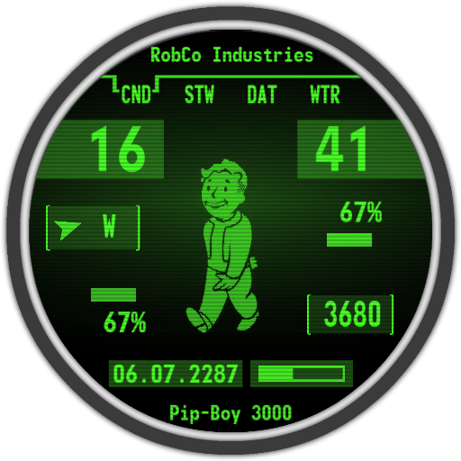
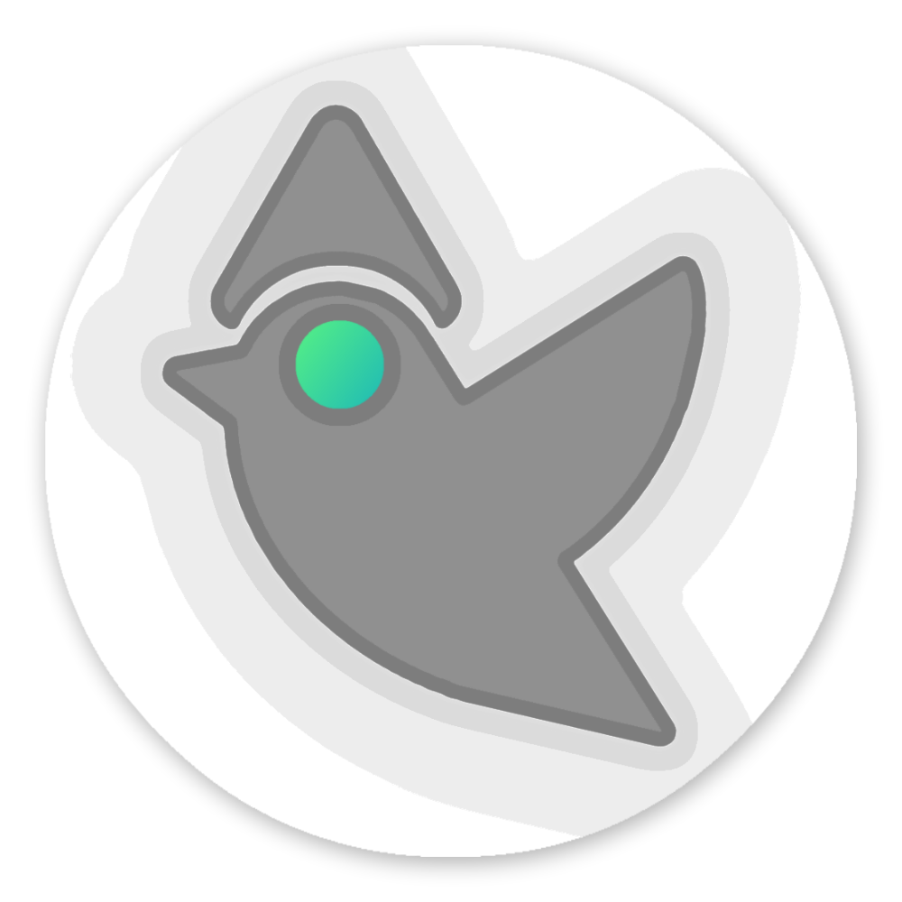
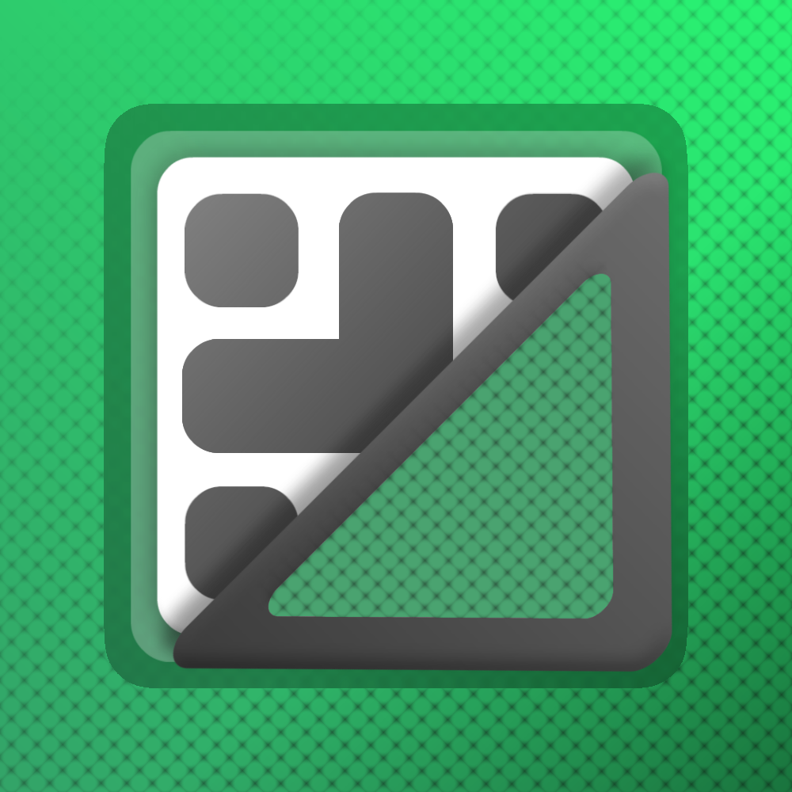
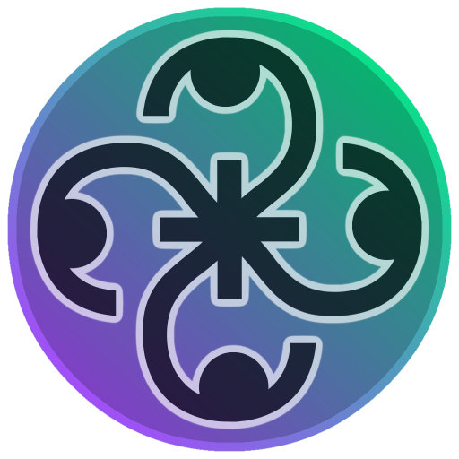
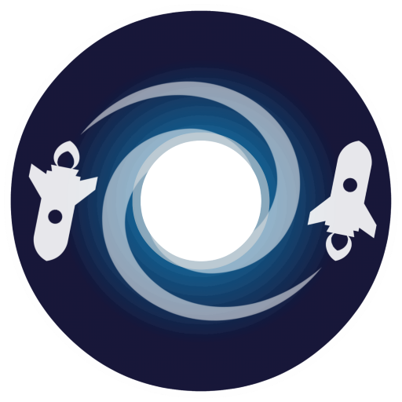

我的个人技能
语言和框架
- Java
- C
- Javascript
- Angular
- Typescript
- Python
- Kotlin
- Dart
- Flutter
- HTML/css
- SQL
- LUA
- React
- Gatsby
- Liferay
软件和平台
- Android Studio
- Visual Studio
- Eclipse
- Postman
- Git/Sourcetree
- Office suite
- Adobe Suite
- Inkscape
- Sony Vegas
- Linux OSes and bash
- Windows and PowerShell
- PostgreSQL
- Fusion360
- Simplify3D
硬件及杂项
- 软件架构
- 3D打印机维护
- PC维修与组装
- 内核和ROM编译
- 高级Android应用
- 3D建模与处理
- 系统管理
- 社交媒体管理
- 英语流利
- 逻辑思维和解决问题能力
- 摄影技巧
- 创意设计能力
我的作品
我曾参与多个协作项目，也独立完成了各类创意开发。
以下是我最引以为傲的项目精选！
Pip-Boy 表盘

了解更多
这款表盘最初于 2015 年作为个人项目启动，采用 LUA 脚本与一套图形资源，并在 Photoshop 中亲手重制。经过持续优化，目前其付费下载量已接近 2.5 万次，我仍在不断打磨与改进！
Birday - 生日管理工具

了解更多
又一款使用 Kotlin 编写的免费时间管理应用，实质上是一个开源事件管理器，完全免费提供。它采用 Room 数据库与 MVVM 架构设计，支持自动从 Google 通讯录导入生日信息。代码已发布在 Github 上，欢迎改进与翻译（目前已有近 20 个语言版本）。
QR Wallet - 绿色通行证、门票

了解更多
一款 Flutter 应用，可轻松管理各类二维码与条形码，内置独特的 Green Pass 功能，能够完整呈现所有细节。当然，它完全支持离线运行，并配备隐私模式与精致的界面设计。该应用免费提供，但包含广告——每周观看一次 20 秒的视频广告即可免费移除广告。
Randomix - 决策者

了解更多
这是我在空闲时间开发的一款应用，核心功能是一个开源的随机数判定器，完全免费提供。它大量运用了动画矢量可绘制对象，这是一种颇具趣味的 Android 资源类型，并严格遵循最新的 Material Design 设计规范。代码已发布在 Github 上，欢迎改进与翻译。
Escape Earth - 2018年NASA黑客马拉松

了解更多
这个项目诞生于 NASA 太空应用挑战赛（2018 年 10 月 20 日至 21 日）期间，是一款使用 Flutter 框架开发的跨平台应用程序。我负责项目的初步构思、代码编写与 UI 设计，同时还制作了演示视频和 PowerPoint 演示文稿。
作品集网站！
这个网站是我亲自打造的项目，我已将源代码上传至 GitHub，供开发者参考与学习。你可以在这里查看，同时也能了解相关的托管服务与域名配置信息。
有趣的事实！
- 我偏爱优雅的穿着风格，相信风度与可能性并存。
- 我活跃于多个开发者社群，尤其是在 Telegram 上，也因此结识了几位真正的朋友。
- 我对汽车有着敏锐的辨识力，尤其钟情于日本跑车的设计与性能。
- 虽已不再年少，我仍乐于在闲暇时光中沉浸于电子游戏的世界。
- 我热衷于收藏，从硬币、邮票到瓶盖，每一件都承载着独特的故事。
- 我既是科技爱好者，也关心环境，因此尽量避免过度消费。
- 我的昵称“minar”源自一款集换式卡牌游戏，也是我在 2005 年使用的首个 Xbox 玩家代号。
- 我曾运营一个拥有 5000 名订阅者的 YouTube 频道，遗憾的是它因不明原因被终止。
- 我的音乐品味广泛，尤爱电子与古典的交织之美。
- 相较于狗，我更偏爱猫的灵性；比起海洋，我更向往山峦的静谧。
一些数字，以及我的目标
我只愿以真诚之心，悄然改善世界的一隅；事业与理想固然重要，但唯有能与所爱之人共享成长，方不负前行的意义。
- +150.000 下载
- 40.000 付费下载
- 年经验
- 300 Github星
- +1.000 动画和图标